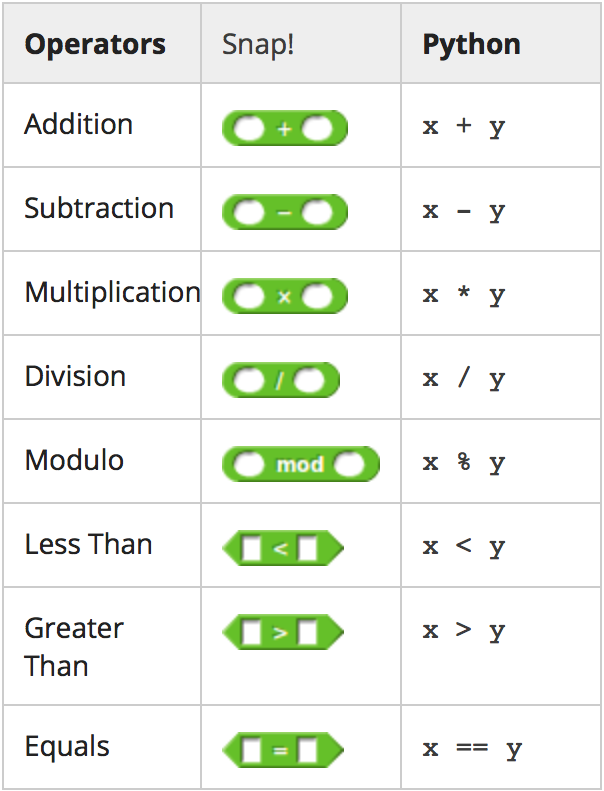
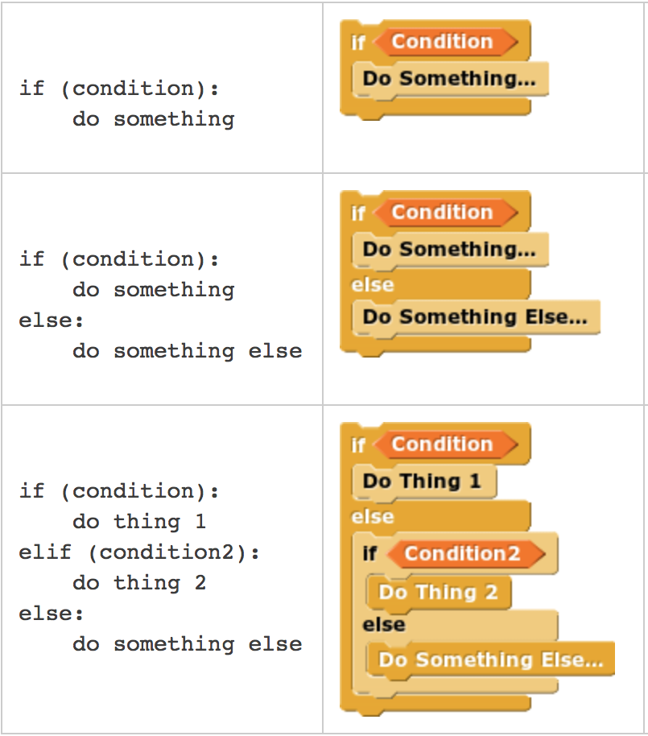

Computer Science 10 is an introductory course that teaches Computer Science concepts through "Snap!", Berkeley's visual language program that is based off of MIT's "Scratch". This class teaches a broad range of Computer Science concepts, such as abstraction, recursion, concurrency, simulation, design, and the limitations of computation. We aim to attract more underrepresented minority groups and women to Computer Science. As of August 2014, I was promoted to Product Manager of the edX Content and edX Development teams. As Product Manager, I work with 20 engineers and lead 7 projects, driving the development of the edX MOOC for CS 10. I define technical specifications and goals of the edX MOOC in preparation for official release in 2015.
From January to May 2014, my team prototyped and tested the first edX courses for both high schoolers and UC Berkeley students. I led the integration of the first CS10 edX course to a class of 238 students on the April 17 launch. I co-wrote the Python curriculum and the autograders used to grade submitted homework.
  The above charts are from the first edX showing how "Snap!" code translates to Python code.